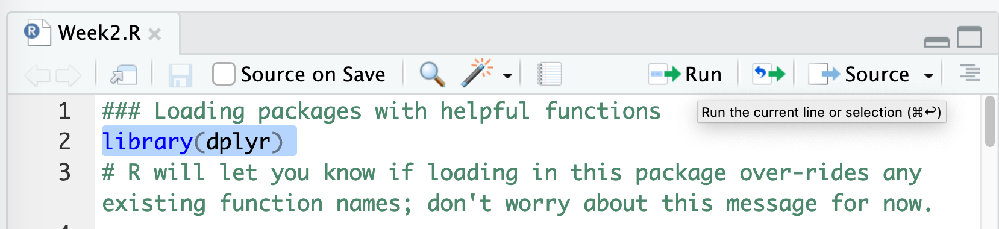

Interacting with Climate Change Data using R
2024-08-19
Data is an essential part of understanding climate patterns and changes over time. In this tutorial, you will learn how to load, manipulate, and visualize data to draw meaningful insights about climate change.
For this climate change activity, we will work with datasets that
provide evidence for global climate change. This tutorial will guide you
through using R, specifically the Tidyverse, to interact
with and analyze climate data.
We will focus on basic data manipulation and visualization techniques
using the dplyr and ggplot2 packages.
Interacting with Climate Data using the dplyr
package
We are going to encounter some methods for interacting with, visualizing, and analyzing earth sciences data in this activity.
Please start by logging into rstudio.pomona.edu.
Note! If you run the command
library(package) and see an error in red text stating
Error in library(package) : there is no package called ‘package’,
don’t worry! That simply means that the package is not installed in your
R environment. All you need to do is just run
install.packages(package) once. (Of
course, replace package with the name of the package in
question, such as swirl).
First, we will all load these packages.
Data operations
In this module, we will focus on the following types of queries for data tables:
View(): open up a spreadsheet viewer to display the datafilter(): subsetting a data table based on values in rowsselect(): subsetting a data table based on specific columns given by their namesarrange(): sorting rows based on the values of specified columns
We will use these operations to explore the climate dataset, such as filtering for specific years or selecting particular variables of interest.
Scripting
Today, we will also embark on writing R scripts to store
our commands. We will even be able to execute the code interactively
from the script editor (much like a text editor or some other type of
notepad).
NB: If you have used .Rmd (R Markdown) files before, you
are more than welcome to use an R Markdown file. But for purposes of the
general teaching in this class, I will introduce R
scripts.
Steps
- Open up RStudio.
- Open an
.Rscript- Note that you can navigate to the bars in between each pane until you see a icon, which you can use to drag the panes to be larger or smaller
- Subsequently, as you read through this tutorial, please copy the
code into the
Rscript and use the file as a way to track your commands:- Note that below, any line starting with the pound sign
#is a comment. - Comments are text that are not executed by
R. - In general, it is good practice to “comment your code” – that is,
use comments to annotate your code for future reference. When you’ve
copied in the code into the
Rscript, it will look something like this:
- Note that below, any line starting with the pound sign

- Next, save the file when you make changes using the icon and give it an informative name.
- Now you can run the code from the script editor directly!
- The easiest way to run the code is to highlight each line of code
and either type
⌘ + Enter(people who have Mac OS) orCTRL + Enter(Windows and Linux). You can also highlight each line of code with your mouse and use the “run code” button at the top right-hand side of the text editor pane:  - Note that running each line of code from the text editor (from the
Rscript in this case) is the same as typing the commands into the console. You typed commands directly into the console last week in your initial interactions withR. - Writing scripts is advantageous because you can store your commands somewhere convenient and revisit or edit the file anytime.
Interacting with climate data
Opening up a spreadsheet viewer
Oftentimes, we may want a more intuitive way to see our data tables.
It can be really annoying when R is too clever and only
displays a subset of the columns of your spreadsheet. The
View() function pulls up an Excel-style data viewer. Let’s
try it below:
View(keelingCO2)Filtering Rows
The filter() function allows you to subset a data table
based on the values in the rows. For instance, to filter the Keeling CO2
data to include only the records from the year 2000 and later, you can
use:
filtered_data <- dplyr::filter(keelingCO2, Year >= 2000)
head(filtered_data)Selecting Columns
The select() function allows you to subset the data
table to include only specific columns by their names. For example, if
we only want to keep the CO2 column:
selected_data <- dplyr::select(keelingCO2, meanCO2ppm)
head(selected_data)Arranging Rows
The arrange() function allows you to sort the rows of
your data table based on the values of specific columns. For example, if
you want to arrange the data by the CO2 concentration in descending
order:
arranged_data <- dplyr::arrange(keelingCO2, desc(meanCO2ppm))
head(arranged_data)Merging datasets
Sometimes, data that we want to combine for analyses are separated
across different spreadsheets or data tables. How can we combine these
different data tables? Join operations (FMI
on joining two data tables) offer a way to merge data
across multiple data tables (also called data frames in R
parlance).
Below, I will first create two data tables that store different characteristics about fruit.
### Load dplyr and stringr packages into R workspace
library(dplyr)
library(stringr)
### Table storing colors of 5 fruits
dt1 <- tibble::tibble(fruit=c("apple","pear","orange","kiwi","mangosteen"),
color=c("red","green","orange","brown","purple"))
dt1 # display table## # A tibble: 5 × 2
## fruit color
## <chr> <chr>
## 1 apple red
## 2 pear green
## 3 orange orange
## 4 kiwi brown
## 5 mangosteen purple### Table storing prices of 3 fruits
dt2 <- tibble::tibble(fruit=c("pear","orange","mangosteen","cherimoya"),
price=c(1.25,1,5,4.7)) # price per pound
dt2 # display table## # A tibble: 4 × 2
## fruit price
## <chr> <dbl>
## 1 pear 1.25
## 2 orange 1
## 3 mangosteen 5
## 4 cherimoya 4.7All join operations assume there is some column between your data
tables that has consistent values that you can use to merge the records
in the data tables together. In the case of this simple example, the
shared column is fruit.
Left join
The first join that we will look at is the left_join
function from the dplyr package. The left_join
will keep all of the rows in the left-hand side table and attempt to
match entries from the second (right-hand side) table. If there is no
match, R will populate NA (missing value) at
that missing join location.
left_join(dt1, dt2)## Joining with `by = join_by(fruit)`## # A tibble: 5 × 3
## fruit color price
## <chr> <chr> <dbl>
## 1 apple red NA
## 2 pear green 1.25
## 3 orange orange 1
## 4 kiwi brown NA
## 5 mangosteen purple 5# Note that the left_join function detects that both data tables both have a column named "fruit". What would happen if they didn't have a column with the same name?We see that R has merged the two data tables,
dt1 and dt2 together; the resulting data table
above has all of the unique columns across these two data tables
(fruit - the column we used to merge the two data tables
together, color from dt1, and
price from dt2). We also see that
R has matched the records across the two data tables–see
for yourself for example that the row for pear has the
correct values from dt1 (color=green) and
dt2 (price=1.25).
What is going on with those weird NA values?
What we see above is that because dt2 didn’t have any
data for apple and kiwi, R has
attempted to match all 5 fruits from dt1 (left-hand side
data table) with the fruits in dt2, and the fruits that
were in dt1 but not dt2 get an NA
value in the price column, which is merged from
dt2 to dt1. Note also that the fruit that is
only in dt2 but not dt1
doesn’t show up in the merged data table (no cherimoya
row).
Right join
In this case, R retains all of the records from
dt2. Because dt1 has some fruits that
dt2 does not, that means that the fruits that are
unique to dt1 will not show up in
the merged data table.
right_join(dt1, dt2)## Joining with `by = join_by(fruit)`## # A tibble: 4 × 3
## fruit color price
## <chr> <chr> <dbl>
## 1 pear green 1.25
## 2 orange orange 1
## 3 mangosteen purple 5
## 4 cherimoya <NA> 4.7As before, because cherimoya is only defined in
dt2, but not dt1, R populates an
NA value for all of the columns that are coming from
dt1 (in this case, the column color) to the
final merged data table.
Inner join
In the inner_join function, only those rows that have
exact matches across the two data tables are preserved in the final
merged data table.
inner_join(dt1, dt2)## Joining with `by = join_by(fruit)`## # A tibble: 3 × 3
## fruit color price
## <chr> <chr> <dbl>
## 1 pear green 1.25
## 2 orange orange 1
## 3 mangosteen purple 5We see that this resulting data table presents only the three fruits
that are included in both dt1 and dt2.
Full join
In a full join operation, all unique elements across dt1
and dt2 are preserved in the final merged data table. For
non-matching pairs, R will fill in an NA
value.
full_join(dt1, dt2)## Joining with `by = join_by(fruit)`## # A tibble: 6 × 3
## fruit color price
## <chr> <chr> <dbl>
## 1 apple red NA
## 2 pear green 1.25
## 3 orange orange 1
## 4 kiwi brown NA
## 5 mangosteen purple 5
## 6 cherimoya <NA> 4.7We see that this merged table has all 6 unique fruits across the two
data tables. We see that R has assigned NA in
price (the column from dt2) for the two fruits
that are in dt1 but not dt2
(apple and kiwi). We also see that there is an
NA value in color (the column from
dt1) for cherimoya, which is a fruit that was
only listed in dt2.
The need for consistency to ensure successful joins
R can’t read our minds, for better or for worse. So if
we notice that our data tables are not consistent in how they present
the fruits, then we’ll see different join behavior. R is
looking for an exact match of the words in the joining column
(fruit).
### Modifying dt2
dt2 <- tibble::tibble(fruit=c("Pear","Orange","Mangosteen","Cherimoya"),
price=c(1.25,1,5,4.7)) # price per pound
dt2 # display table## # A tibble: 4 × 2
## fruit price
## <chr> <dbl>
## 1 Pear 1.25
## 2 Orange 1
## 3 Mangosteen 5
## 4 Cherimoya 4.7# dt1 # display dt1 to compare the fruit column visually
### See what happens - R can't join the fruits up - the words are not identical because R is case sensitive
full_join(dt1,dt2) ## Joining with `by = join_by(fruit)`## # A tibble: 9 × 3
## fruit color price
## <chr> <chr> <dbl>
## 1 apple red NA
## 2 pear green NA
## 3 orange orange NA
## 4 kiwi brown NA
## 5 mangosteen purple NA
## 6 Pear <NA> 1.25
## 7 Orange <NA> 1
## 8 Mangosteen <NA> 5
## 9 Cherimoya <NA> 4.7Dang! R has treated pear as a different
value than Pear. That’s really silly and unfortunate. It’s
not “automagically” joining up the data across the two tables because
R is case sensitive (that is, pear is
different from Pear to R).
We can fix this example here by taking dt2 and making
the fruit column all lower-case then re-running the join
operation.
### Let's fix this problem and make the fruit names consistent
dt2new <- dt2 %>%
mutate(fruit=tolower(fruit)) # a function that takes character/strings (words) and converts them to lower case
dt2new # confirm that now the fruit names are lower case## # A tibble: 4 × 2
## fruit price
## <chr> <dbl>
## 1 pear 1.25
## 2 orange 1
## 3 mangosteen 5
## 4 cherimoya 4.7### Re-run full_join
full_join(dt1,dt2new)## Joining with `by = join_by(fruit)`## # A tibble: 6 × 3
## fruit color price
## <chr> <chr> <dbl>
## 1 apple red NA
## 2 pear green 1.25
## 3 orange orange 1
## 4 kiwi brown NA
## 5 mangosteen purple 5
## 6 cherimoya <NA> 4.7Additional exercises to build understanding
Given dt1, dt2, and dt2new
that have just been defined above, run and contrast the outputs of the
following:
left_join(dt1, dt2)- versus:
left_join(dt1, dt2new)
- versus:
right_join(dt1, dt2)- versus:
right_join(dt1, dt2new)
- versus:
inner_join(dt1, dt2)- versus:
inner_join(dt1, dt2new) - notice that
inner_join(dt1, dt2)tells you that it didn’t find any matches! It produces a table that has0 x 3dimensions, or0rows because it didn’t find any matching records acrossdt1anddt2.
- versus:
An example with climate data
Below, we are going to join the CO2 observation data with data on sea
ice extent. We are going to combine these data by matching them based on
the year of each observation. Something to think about: if we are using
year to match these data, what are we assuming about the
data in order to justify this match?
seaIce <- openxlsx::read.xlsx(sheet_url,"SeaIce")
seaIceCO2 <- left_join(seaIce, keelingCO2, by=c("year"="year")) # we are joining up the sea ice extent data with global CO2 level data, matching on each year